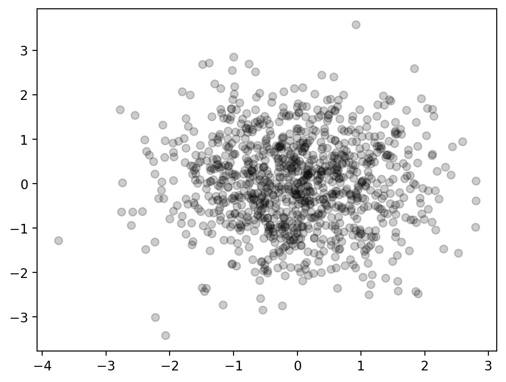
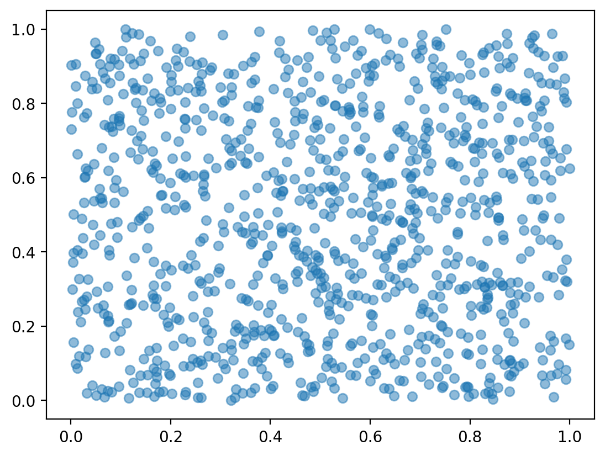
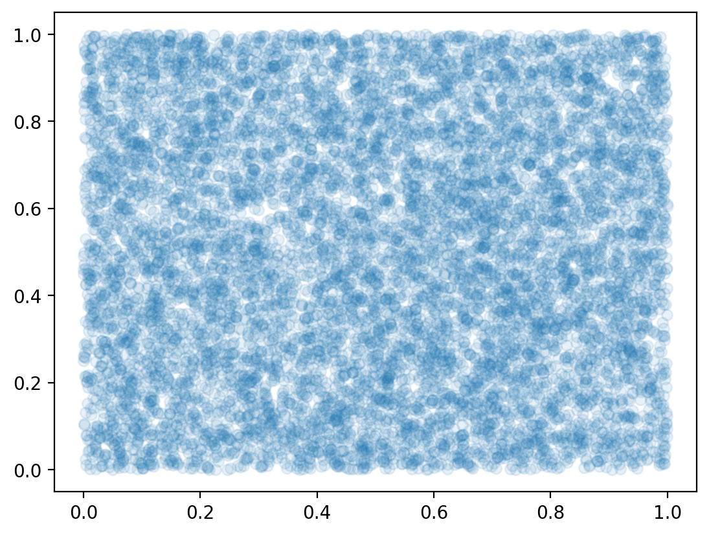

import matplotlib.pyplot as plt
import numpy as np
print(np.__version__)
import torch
import torch.nn as nn
import pandas as pd
# Retina mode
%matplotlib inline
%config InlineBackend.figure_format = 'retina'2.2.4import matplotlib.pyplot as plt
import numpy as np
print(np.__version__)
import torch
import torch.nn as nn
import pandas as pd
# Retina mode
%matplotlib inline
%config InlineBackend.figure_format = 'retina'2.2.4dist = torch.distributions.Normal(0, 1)
x = dist.sample((1000,))
plt.hist(x.numpy(), bins=50, density=True)
x_range = torch.linspace(-3, 3, 1000)
y = dist.log_prob(x_range).exp()
plt.plot(x_range.numpy(), y.numpy())
dist.sample([10])tensor([-1.9083, 0.3758, 0.0051, 0.5140, 0.9852, -0.5989, 0.5222, -0.7744,
0.9462, -1.7868])dist_2d_normal = torch.distributions.MultivariateNormal(torch.tensor([0.0, 0.0]), torch.eye(2))
dist_2d_normal.sample([10])tensor([[ 0.8966, 1.0857],
[ 1.8956, -0.6984],
[ 1.2194, 0.5181],
[ 0.3381, -0.0392],
[-0.2047, -0.4560],
[-1.3552, -0.3871],
[-0.2139, -0.8495],
[ 0.0496, 1.7242],
[-0.8782, 0.8101],
[ 2.5491, -0.3234]])plt.scatter(*dist_2d_normal.sample([1000]).numpy().T)
# Plot 2D normal distribution surface plot of PDF
from mpl_toolkits.mplot3d import Axes3D
x = torch.linspace(-3, 3, 100)
y = torch.linspace(-3, 3, 100)
X, Y = torch.meshgrid(x, y)
xy = torch.stack([X, Y], 2)
z = dist_2d_normal.log_prob(xy).exp()
fig = plt.figure()
ax = fig.add_subplot(111, projection='3d')
ax.plot_surface(X.numpy(), Y.numpy(), z.numpy())
ax.set_xlabel('X')
ax.set_ylabel('Y')
ax.set_zlabel('PDF')
fig.tight_layout()df = pd.read_html("http://socr.ucla.edu/docs/resources/SOCR_Data/SOCR_Data_Dinov_020108_HeightsWeights.html")store_df = df[0]
store_df.columns = store_df.iloc[0]
store_df = store_df.iloc[1:]
store_df = store_df.astype(float)
store_df = store_df.drop(columns=["Index"])
store_df = store_df.dropna()store_df.head()| Height(Inches) | Weight(Pounds) | |
|---|---|---|
| 1 | 65.78331 | 112.9925 |
| 2 | 71.51521 | 136.4873 |
| 3 | 69.39874 | 153.0269 |
| 4 | 68.21660 | 142.3354 |
| 5 | 67.78781 | 144.2971 |
### Fiting a bi-variate normal distribution to the data
data = torch.tensor(store_df.values)
mean = data.mean(0)
cov = torch.cov(data.T)
dist = torch.distributions.MultivariateNormal(mean, cov)dist.loctensor([ 67.9931, 127.0794], dtype=torch.float64)dist.covariance_matrixtensor([[ 3.6164, 11.1510],
[ 11.1510, 135.9765]], dtype=torch.float64)# Plot the data
plt.scatter(data[:, 0], data[:, 1], alpha=0.1, color='k', facecolors='k')
plt.xlabel("Height")
plt.ylabel("Weight")
Text(0, 0.5, 'Weight')# plot the PDF
x = torch.linspace(50, 80, 100)
y = torch.linspace(80, 280, 100)
X, Y = torch.meshgrid(x, y)
xy = torch.stack([X, Y], 2)
z = dist.log_prob(xy).exp()
import plotly.graph_objects as go
# Create surface plot with custom hover labels
fig = go.Figure(data=[go.Surface(
x=X, y=Y, z=z, colorscale="viridis",
hovertemplate="Height: %{x:0.2f}<br>Weight: %{y:0.2f}<br>PDF: %{z:0.5f}<extra></extra>"
)])
# Maximize figure size and reduce whitespace
fig.update_layout(
autosize=True,
width=1200, # Set wider figure
height=700, # Set taller figure
margin=dict(l=0, r=0, t=40, b=0), # Remove extra whitespace
title="2D Gaussian PDF",
scene=dict(
xaxis_title="Height",
yaxis_title="Weight",
zaxis_title="PDF"
)
)
# Show plot
fig.show()Unable to display output for mime type(s): application/vnd.plotly.v1+json# uniform distribution
dist_uniform = torch.distributions.Uniform(0, 1)
x = dist_uniform.sample((1000,))
plt.hist(x.numpy(), bins=50, density=True)
x_range = torch.linspace(0, 1, 1000)
y = dist_uniform.log_prob(x_range).exp()
plt.plot(x_range.numpy(), y.numpy())dist_uniform_2d = torch.distributions.Uniform(torch.tensor([0.0, 0.0]), torch.tensor([1.0, 1.0]))
dist_uniform_2d.sample([10])tensor([[0.5616, 0.8790],
[0.5337, 0.3128],
[0.3291, 0.4818],
[0.0944, 0.0806],
[0.9693, 0.4371],
[0.6927, 0.1281],
[0.7620, 0.0081],
[0.2285, 0.0637],
[0.7492, 0.0922],
[0.5008, 0.5269]])plt.scatter(*dist_uniform_2d.sample([1000]).numpy().T, alpha=0.5)
plt.scatter(*dist_uniform_2d.sample([10000]).numpy().T, alpha=0.1)
# surface plot of PDF
x = torch.linspace(0.0, 1.0, 100)
y = torch.linspace(0.0, 1.0, 100)
X, Y = torch.meshgrid(x, y)
xy = torch.stack([X, Y], 2)
## Important:
## f(x, y) = f(x) * f(y) for independent random variables
## log(f(x, y)) = log(f(x)) + log(f(y))
z1 = dist_uniform_2d.log_prob(xy).sum(-1).exp()
z2 = dist_uniform.log_prob(X).exp() * dist_uniform.log_prob(Y).exp()
assert torch.allclose(z1, z2)
fig = plt.figure()
ax = fig.add_subplot(111, projection='3d')
ax.plot_surface(X.numpy(), Y.numpy(), z1.numpy())
ax.set_xlabel('X')
ax.set_ylabel('Y')
ax.set_zlabel('PDF')Text(0.5, 0, 'PDF')